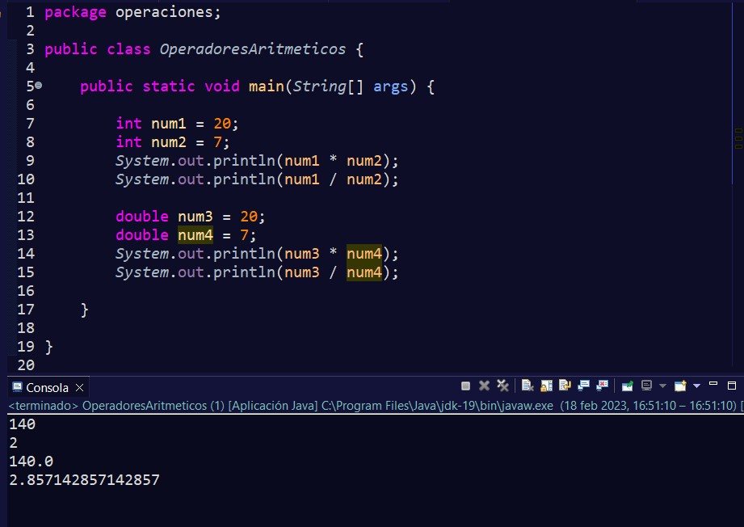

Los operadores aritméticos, como se vio anteriormente, son aquellos con los que podremos operar matemáticamente. A continuación, vamos a ver varios ejemplos de cómo utilizarlos.
Para sumar dos números, podremos operarlos sin necesidad de introducir los valores en una variable. Y para poder ver el resultado, lo introducimos dentro de System.out.println().

Esto no es muy útil si lo que queremos es conservar el valor para usarlos más veces en nuestro programa. Por eso podremos introducirlos dentro de variables y operar con ellos.
La resta funciona exactamente igual que la suma. También podremos sumar o restar variables con valores que no estén contenidas dentro de una variable.
También podremos hacer operaciones con otros tipos de datos como float y dobule, y aunque parezca extraño, también podremos sumar valores de tipo char.
Esto es posible porque como vimos en los tipos de datos, char en realidad es un número cuyo valor está definido en la tabla Unicode. Por eso podremos hacer operaciones como si de un entero se tratara.
También podremos multiplicar y dividir. En la división, cuando trabajemos con enteros, la parte no entera será ignorada. Así que, si deseamos ver la parte no entera, deberemos usar o bien float, o bien double:
Si en una operación queremos utilizar suma, resta, multiplicación y división, deberemos respetar el orden al igual que cuando operamos con matemáticas, y si queremos operar primero la suma de dos números y después multiplicar o dividir, tendremos que envolver a éstos en paréntesis:
Tenemos un operador especial que lo que nos hace es averiguar el resto de una división, a éste se le suele denominar también módulo y está representado con el símbolo %.
Hay que señalar que tenemos que tener cuidado cuando operamos con Strings, ya que el operador de suma, también puede utilizarse como concatenación.
Si nos fijamos, en la primera operación, el string estaba primero, por eso, en vez de sumar las operaciones, se han concatenado. Es decir, se han colocado los números uno a continuación de otro.
En la segunda operación, primero se suman los números y después, cuando se encuentra con el String, se concatena.
Por esto, si necesitáramos introducir antes un String y después realizar una operación, tendríamos que usar los paréntesis para dar prioridad a la suma que hay en el interior y después concatenar:
En la primera operación simplemente se concatena, pero en la segunda operación, al haberlo introducido dentro de los paréntesis podremos ver cómo efectivamente, se suman los números y después se concatena el resultado con el String.
Por último, tenemos los operadores de incremento y decremento. Estos lo que harán será incrementar el valor una unidad o decrementar el valor en una unidad.
Si el incremento o decremento aparece delante de nuestra variable, primero se incrementará o decrementará el valor y luego se imprimirá por consola el resultado:
Pero si lo colocamos en la parte derecha, primero se imprimirá por consola y después incrementará o decrementará.